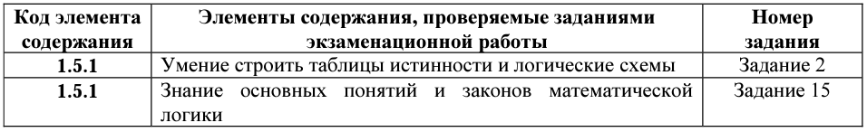
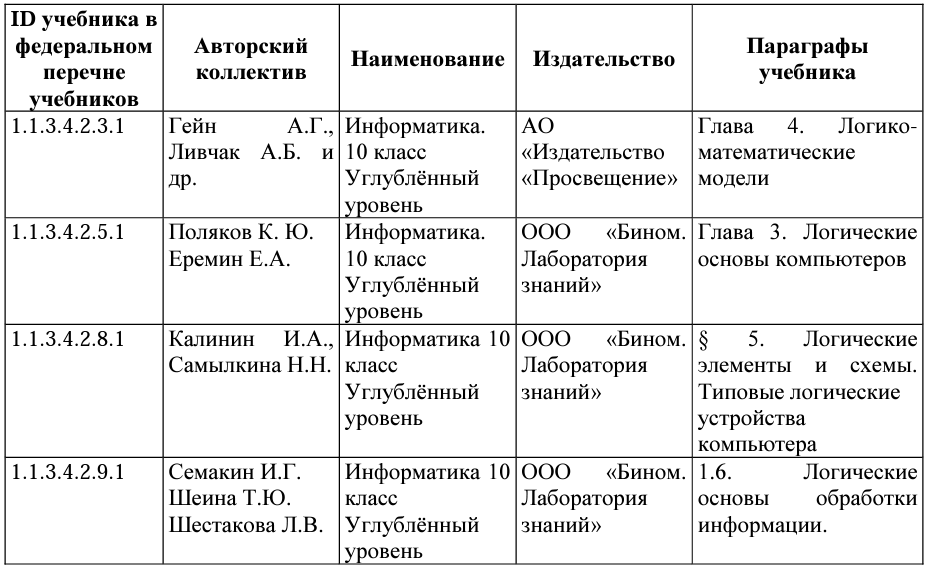

Логические основы компьютера
Какие позиции кодификатора элементов содержания проверяет:
Что нужно знать/уметь по теме:
ЗНАТЬ:
Основные понятия: Алгебра логики. Высказывание. Логические операции: НЕ, И, ИЛИ, исключающее ИЛИ, импликация, эквивалентность. Логическое выражение, логическая формула. Таблица истинности. Законы алгебры логики. Булевы функции. Канонические формы логических формул.
УМЕТЬ:
строить логические выражения с помощью операций дизъюнкции, конъюнкции, отрицания, импликации, эквиваленции; выполнять эквивалентные преобразования этих выражений, используя законы алгебры логики (в частности, свойства дизъюнкции, конъюнкции, правила де Моргана, связь импликации с дизъюнкцией); строить таблицу истинности заданного логического выражения; строить логическое выражение в дизъюнктивной нормальной форме по заданной таблице истинности; определять истинность высказывания, составленного из элементарных высказываний с помощью логических операций, если известна истинность входящих в него элементарных высказываний; исследовать область истинности высказывания, содержащего переменные; решать логические уравнения.
Где взять информацию по теме
Учебники федерального перечня Минпросвещения России
Какие задания открытого банка выполнить для тренировки:
Задание №2
Вариант №1 Вариант №2 Вариант №3 Вариант №4 Вариант №5 Вариант №6 Вариант №7 Вариант №8 Вариант №9 Вариант №10 Вариант №11 Вариант №12 Вариант №13 Вариант №14 Вариант №15 Вариант №16 Вариант №17 Вариант №18 Вариант №19 Вариант №20 Вариант №21 Вариант №22Задание №7
Вариант №1 Вариант №2 Вариант №3 Вариант №4 Вариант №5Задание №15 тип 1
Вариант №1 Вариант №2 Вариант №3 Вариант №4 Вариант №5 Вариант №6 Вариант №7Задание №15 тип 2
Вариант №1 Вариант №2 Вариант №3 Вариант №4 Вариант №5 Вариант №6 Вариант №7 Вариант №8 Вариант №9 Вариант №10Задание №15 тип 3
Вариант №1 Вариант №2 Вариант №3 Вариант №4 Вариант №5 Вариант №6 Вариант №7 Вариант №8 Вариант №9Задание №15 тип 4
Вариант №1